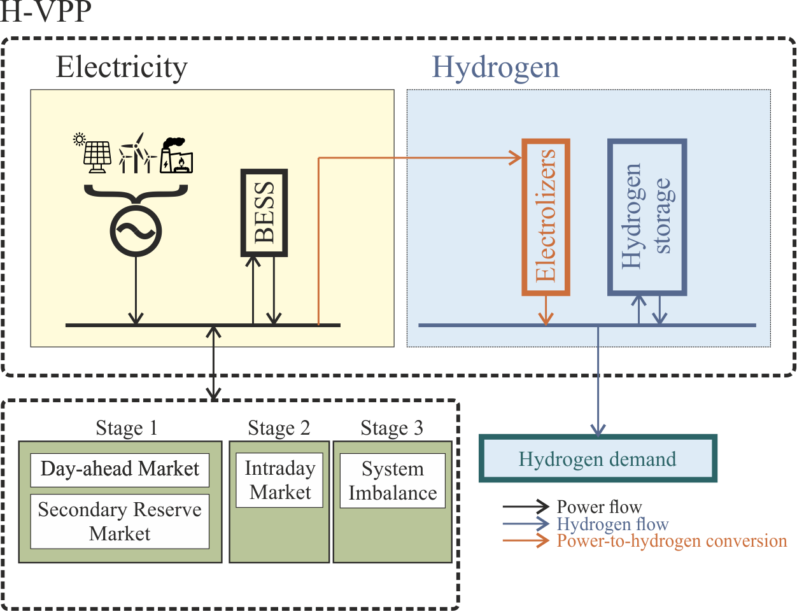

Introduction¶
The Hydrogen in Short-Term Electricity Markets (HySTEM) model determines the optimal participation in the short-term electricity market of a hydrogen-based virtual power plant (H-VPP). The H-VPP is an association of hydrogen-based energy storage systems (ESS), a power generation unit (PG: a Solar PV, Wind, or CCGT), and battery energy storage systems (BESS) that can participate in the market as a single entity.
{kind=link}
The model aims at optimizing the operation scheduling of the H-VPP in the short-term electricity market within a multi-stage stochastic framework (day-ahead, intra-day, real-time, and secondary reserve markets), which considers the uncertainty of the renewable production and the day-ahead, intra-day, and secondary reserve market prices. Short-term operation concerns time horizons of 1-7 days with high temporal granularity (5 min-1 h). Its objective is to maximize the expected value of the total profit of the H-VPP. The main results are the bids of the H-VPP in the day-ahead market and the guidelines for the operation of the H-VPP in the other markets.
The HySTEM model presents a decision support system for defining the optimal participation of an H-VPP in the short-term electricity market, defined as a set of energy and reserve decisions for one or multiple future days with high temporal granularity. The user pre-defined the H-VPP structure, so the model determines the optimal decisions among those specified by the user.
It automatically determines the optimal operation scheduling that satisfies several attributes simultaneously. Its main characteristics are:
Markets: This work considers the operation of the H-VPP in three different electricity markets: the day-ahead market (DA), the intraday market (ID), and the secondary reserve market (SR) plus the imbalance settlement:
Day-ahead market (DA): handles electricity transactions for the following day by presenting 24-hour electricity sales and purchase bids by market participants. The result of the DA clearing can be modified subsequently by the ISO/TSO to guarantee the safety and reliability of the supply.
Secondary reserve market (SR): ancillary service that aims to maintain the generation-demand balance by correcting deviations to fill the gap between forecasted and actual energy consumption. Market agents can submit their upward and downward reserve availability (reserve band) to this 24-hour auction market.
Intraday market (ID): The purpose of the intraday market is to respond a) to the adjustments that the ISO/TSO makes to either the results of the DA or b) to its own deviations from the expected generation availability. This is done through the presentation of electricity power sales and purchase bids by market agents (again, organized through hourly auctions).
Imbalance settlement (IB): After day D, the actual deviations between the true real-time generation of the H-VPP and the energy cleared in the DA and IM are calculated. Should the real generation exceed the cleared energy, some collection rights will be paid to the H-VPP owner. Otherwise, if the real generation is less than the cleared energy, the H-VPP owner must face some payment obligations.
Multiperiod: The model’s scope corresponds to several periods of the day-ahead (from 1-7 days: 24-168 hours, for example) with high temporal granularity that can be every 5 min or equivalent to the period (1 hour).
It represents hierarchically the different time scopes to make decisions in an electric system:
Day-ahead level: every 1 hour, e.g., 01-01 00:00:00+01:00 to 01-07 23:00:00+01:00
Secondary reserve level: every 1 hour, e.g., 01-01 00:00:00+01:00 to 01-07 23:00:00+01:00
Intra-day level: every 3 hours, e.g., 01-01 00:00:00+01:00 to 01-07 21:00:00+01:00
Real-time level: every 15 minutes, e.g., 01-01 00:00:00+01:00 to 01-07 23:45:00+01:00
The time division allows a user-defined flexible representation of the periods for evaluating the system operation. The model can be run with a single period (day) or with several periods (days) to allow the analysis of the system evolution, as well as the number of intra-day and real-time levels per period.
Stochastic: Several stochastic parameters that can influence the optimal operation decisions are considered. The model considers uncertainties (scenarios) related to the system operation. These operation scenarios are associated with renewable energy sources, operating reserves, and market prices.
Therefore, the optimal operation of the H-VPP in electricity markets is a multi-stage decision-making process in which the different operational recourse decisions are taken once random variables (prices and solar/wind production) are known since the first stage decision is taken before that.
The sequence of events involved in the H-VPP decision-making process is the following:
Day D-1: During day D-1, the bid to the three electricity markets (DA, SR, and ID) is submitted, and the markets are cleared:
The price accepting selling bid to the DA for day D, the first stage variables, are submitted no later than 12:00.
At 12:00 the DA closes, and the 24 DA’s clearing prices are made public simultaneously before 13:00 (stage 1).
The bidding period in the SR for day D opens at 12:00, and the price accepting bid to the SR can be submitted until 14:00.
The 24 SR’s prices are disclosed simultaneously before 15:00 (stage 2).
The bidding period in the ID of day D opens at 17:00, and the H-VPP’s price accepting bid (either selling or purchase) to the ID can be submitted until 18:45.
The 24 ID’s prices are published simultaneously before 19:30 (stage 3).
Day D: During day D, the BESS must operate hourly by the real PG production to deliver the amounts (energies and reserve) cleared in the auctions of day D-1:
At every hour \(h \in \{1, \hdots, 24 \}\) of day D, the charges and discharges are decided before observing the value of the actual generation of the PG, according to the state of the BESS at the end of hour \(h−1\) and the energy and reserve commitment of the H-VPP for hour \(h\). Then, the actual generation of the PG is disclosed, and the value of the imbalances is set (stages 4–27).
Day D+1:
Finally, after day D, the prices to be applied to imbalances are published (stage 28).
The objective function incorporates the four types of profits related to the participation of the H-VPP in the short-term electricity market: day-ahead market profit, secondary reserve market profit, intra-day market profit, and real-time market profit.
The main results of the model can be structured in these items:
Electricity: Energy of the price accepting bid per period (24-168 hours equivalent to auctions) of the day-ahead market, operating reserve of the price accepting bid per period of the reserve market, energy of the price accepting bid per period of the intra-day market, charges/discharges of the BESS per period, imbalances (positive and negative) of the H-VPP per period.
Hydrogen: Hydrogen production of the H-VPP per period, hydrogen consumption of the H-VPP per period, hydrogen storage of the H-VPP per period, hydrogen imbalances (positive and negative) of the H-VPP per period.
Results are shown in CSV files and graphical plots.
A careful implementation has been done to avoid numerical problems by scaling parameters, variables and equations of the optimization problem, allowing the model to be used for different time scopes under a stochastic framework.